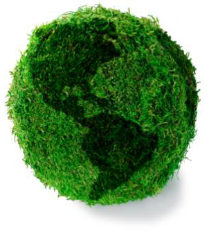

"Realitatea suprema a vremurilor noastre este ...vulnerabilitatea planetei noastre."
- John F. Kennedy
Economia verde, asa cum este definita de recentul Raport al Programului Natiunilor Unite pentru Mediu (lansat in februarie 2011), are ca rezultat
îmbunatatire bunastarii si echitatii sociale, concomitent cu reducerea semnificativa a riscurilor de mediu si deficitului ecologic. Tranzitia spre o economie verde înseamna politici si investitii care vor decupla cresterea economica de cresterea consumului curent intensiv de materii prime si energie. O economie verde poate fi gândita ca o economie cu emisii reduse, prin utilizarea eficienta si durabila a resurselor si asigurarea incluziunii sociale. Într-o economie verde, cresterea veniturilor si ocuparea fortei de munca ar trebui sa fie impulsionate de catre investitiile publice si private ce reduc emisiile de carbon si poluarea, sporesc eficienta energetica si eficienta resurselor, si previn pierderea biodiversitatii si a serviciilor ecosistemelor.
Karl Burkart defineste o economie verde ca fiind bazata pe sase sectoare principale:
1.Energie regenerabila (solara, eoliana etc.);
2.Constructii “verzi" (ex. constructii LEED – Leadership in Energy and Environmental Design);
3.Combustibili alternativi (vehicule electrice, hibride sau combustbili alternativi);
4.Managementul apei (epurarea apelor, sisteme de colectare a apei de ploaie etc.);
5.Managementul deseurilor (reciclare, depozitare etc.);
6.Managementul teritorial (incluzând agricultura organica, conservarea habitatelor, împaduriri la nivel urban-parcuri, reîmpaduriri si stabilizarea terenurilor).
De asemenea exista si cea de a 7-a categorie ce poarta denumirea de "piete verzi" si include piete precum "green banking and
financial investment services" - servicii bancare si de investitii verzi; "carbon trading" - comertul cu carbon s.a.
